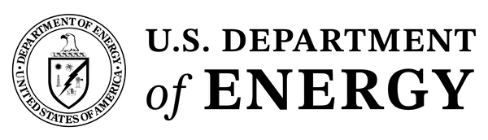

Spallation Neutron Source · November 18–19, 2026
RheoSANS Workshop
Changwoo DoEQ-SANS Point of Contact · Neutron Scattering Division
Choose a talk: click a card, or press 1 2 3 4F full screen · in a talk, ⌂ comes back here
